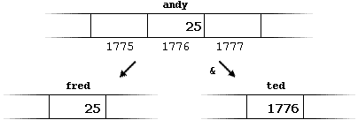
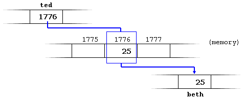
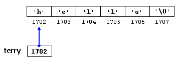
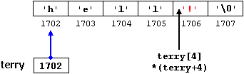
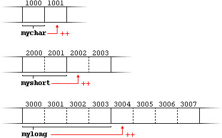
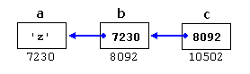

|
Section 3.3 Pointers |
 |
|
| |
|
Section 3.3 Pointers |
|
|
| |
We have already seen how variables are memory cells that we can access by an identifier. But these variables are stored in concrete places of the computer memory. For our programs, the computer memory is only a succession of 1 byte cells (the minimum size for a datum), each one with a unique address.
A good simile for the computer memory can be a street in a city. On a street all houses are consecutively numbered with an unique identifier so if we talk about 27th of Sesame Street we will be able to find that place without loss, since there must be only one house with that number and, in addition, we know that that house will be between houses 26 and 28.
In the same way in which houses in a street are numbered, the operating system organizes the memory with unique and consecutive numbers, so if we talk about location 1776 in the memory, we know that there is only one location with that address and also that is between addresses 1775 and 1777.
This can be done by preceding the variable identifier by an ampersand sign (&), which literally means "address of". For example:
ted = &andy;would assign to variable ted the address of variable andy, since when preceding the name of the variable andy with the ampersand (&) character we are no longer talking about the content of the variable, but about its address in memory.
We are going to suppose that andy has been placed in the memory address 1776 and that we write the following:
andy = 25;the result will be the one shown in the following diagram:
fred = andy;
ted = &andy;
We have assigned to fred the content of variable andy as we have done in many other occasions in previous sections of this tutorial, but to ted we have assigned the address in memory where the operating system stores the value of andy, that we have imagined that it was 1776 (it can be any address, I have just invented this one). The reason is that in the allocation of ted we have preceded andy with an ampersand (&) character.
The variable that stores the address of another variable (like ted in the previous example) is what we call a pointer. In C++ pointers have certain virtues and they are used very often. More ahead we will see how this type of variables are declared.
beth = *ted;(that we could read as: "beth equal to value pointed by ted") beth would take the value 25, since ted is 1776, and the value pointed by 1776 is 25.
You must clearly differenciate that ted stores 1776, but *ted (with an asterisk * before) refers to the value stored in the address 1776, that is 25. Notice the difference to include or not the reference asterisk (I have included an explanatory commentary of how each expression could be read):
beth = ted; // beth equal to ted ( 1776 ) beth = *ted; // beth equal to value pointed by ted ( 25 )
|
Operator of address or dereference (&) It is used as a variable prefix and can be translated as "address of", thus: &variable1 can be read as "address of variable1"
Operator of reference (*) |
At this point, and following with the same example initiated above where:
andy = 25;you should be able to clearly see that all the following expressions are true:
ted = &andy;
The first expression is quite clear considering that its assignation was andy=25;. The second one uses the address (or derefence) operator (&) that returns the address of the variable andy, that we imagined to be 1776. The third one is quite obvious since the second was true and the assignation of ted was ted = &andy;. The fourth expression uses the reference operator (*) that, as we have just seen, is equivalent to the value contained in the address pointed by ted, that is 25.andy == 25 &andy == 1776 ted == 1776 *ted == 25
So, after all that, you may also infer that while the address pointed by ted remains unchanged the following expression will also be true:
*ted == andy
Thus, the declaration of pointers follow this form:
type * pointer_name;where type is the type of data pointed, not the type of the pointer itself. For example:
int * number;they are three declarations of pointers. Each one of them points to a different data type, but the three are pointers and in fact the three occupy the same amount of space in memory (the size of a pointer depends on the operating system), but the data to which they point do not occupy the same nor are of the same type, one is int, another one is char and the other one float.
char * character;
float * greatnumber;
I emphasize that this asterisk (*) that we put when declaring a pointer means only that: that it is a pointer, and does not have to be confused with the reference operator that we have seen a bit earlier and that is also written with an asterisk (*). They are simply two different tasks represented with the same sign.
// my first pointer
#include <iostream.h>
int main ()
{
int value1 = 5, value2 = 15;
int * mypointer;
mypointer = &value1;
*mypointer = 10;
mypointer = &value2;
*mypointer = 20;
cout << "value1==" << value1 << "/ value2==" << value2;
return 0;
}
| value1==10 / value2==20 |
In order that you can see that a pointer may take several different values during the same program we have repeated the process with value2 and the same pointer.
Here is an example a bit more complicated:
// more pointers
#include <iostream.h>
int main ()
{
int value1 = 5, value2 = 15;
int *p1, *p2;
p1 = &value1; // p1 = address of value1
p2 = &value2; // p2 = address of value2
*p1 = 10; // value pointed by p1 = 10
*p2 = *p1; // value pointed by p2 = value pointed by p1
p1 = p2; // p1 = p2 (pointer assignation)
*p1 = 20; // value pointed by p1 = 20
cout << "value1==" << value1 << "/ value2==" << value2;
return 0;
}
| value1==10 / value2==20 |
I have included as comments on each line how the code can be read: ampersand (&) as "address of" and asterisk (*) as "value pointed by". Notice that there are expressions with pointers p1 and p2 with and without asterisk. The meaning of putting or not a reference asterisk is very different: An asterisk (*) followed by the pointer refers to the place pointed by the pointer, whereas a pointer without an asterisk (*) refers to the value of the pointer itself, that is, the address where it is pointing to.
Another thing that can call your attention is the line:
int *p1, *p2;that declares the two pointers of the previous example putting an asterisk (*) for each pointer. The reason is that the type for all the declarations of the same line is int (and not int*). The explanation is because of the level of precedence of the reference operator asterisk (*) that is the same one that the declaration of types, therefore, because they are associative operators from the right, the asterisk are evaluated first than the type. We have talked about this in section 1.3: Operators, although it is enough that you know clearly that -unless you include parenthesis- you will have to put an asterisk (*) before each pointer you declare.
int numbers [20];the following allocation would be valid:
int * p;
p = numbers;At this point p and numbers are equivalent and they have the same properties, with the only difference that we could assign another value to the pointer p whereas numbers will always point to the first of the 20 integer numbers of type int with which it was defined. So, unlike p, that is an ordinary variable pointer, numbers is a constant pointer (indeed that is an Array: a constant pointer). Therefore, although the previous expression was valid, the following allocation is not:
numbers = p;because numbers is an array (constant pointer), and no values can be assigned to constant identifiers.
Due to its character of variables all the expressions that include pointers
in the following example are perfectly valid:
// more pointers
#include <iostream.h>
int main ()
{
int numbers[5];
int * p;
p = numbers; *p = 10;
p++; *p = 20;
p = &numbers[2]; *p = 30;
p = numbers + 3; *p = 40;
p = numbers; *(p+4) = 50;
for (int n=0; n<5; n++)
cout << numbers[n] << ", ";
return 0;
}
| 10, 20, 30, 40, 50, |
In chapter "Arrays" we used several times barcket signs [] in order to specify the index of the element from the Array that we wanted to refer. Well, the bracket signs operator [] are known as offset operators and they are equivalent to add the number within brackets to the address of a pointer. For example, both following expressions:
are equivalent and valid either if a is a pointer or if it is an array.a[5] = 0; // a [offset of 5] = 0 *(a+5) = 0; // pointed by (a+5) = 0
int number;this is equivalent to:
int *tommy = &number;
int number;When a pointer assignation takes place we are always assigning the address where it points to, never the value pointed. You must consider that at the moment of declaring a pointer, the asterisk (*) indicates only that it is a pointer, in no case indicates a reference operator asterisk (*). Remember, they are two different operators, although they are written with the same sign. Thus, we must take care of not confusing the previous with:
int *tommy;
tommy = &number;
int number;that anyway would not have much sense in this case.
int *tommy;
*tommy = &number;
Like in the case of arrays, the compiler allows the special case that we want to
initialize the content at which the pointer points with constants at the same moment
of declaring the variable pointer:
char * terry = "hello";in this case static storage is reserved for containing "hello" and a pointer to the first char of this memory block (that corresponds to 'h') is assigned to terry. If we imagine that "hello" is stored at addresses 1702 and following, the previous declaration could be outlined thus:
it is important to indicate that terry contains value 1702 and not 'h' nor "hello", although 1702 points to these last ones.
The pointer terry points to a string of characters and can be used
exactly as if it was an Array (remember that an array is just a constant
pointer). For example, if our temper changed and we wanted to replace
the 'o' by a '!' sign
in the content pointed by terry, we could do it
by any of the following two ways:
terry[4] = '!';remember that to write terry[4] is just the same as to write *(terry+4), although the most usual expression is the first one. With any of those two expressions would happen something like this:
*(terry+4) = '!';

When we saw the different data types that exist, we saw that some occupy more or less space than others in the memory. For example, in the case of integer numbers, char occupies 1 byte, short occupies 2 bytes and long occupies 4.
Let's suppose that we have 3 pointers:
char *mychar;and that we know that they point to memory locations 1000, 2000 and 3000 respectively.
short *myshort;
long *mylong;
So if we write:
mychar++;mychar, as you may expect, would contain the value 1001. Nevertheless, myshort would contain the value 2002, and mylong would contain 3004. The reason is that when adding 1 to a pointer we are making it to point to the following element of the same type with which it has been defined, and therefore the size in bytes of the type pointed is added to the pointer.
myshort++;
mylong++;
This is applicable both when adding and subtracting any number to a pointer. It would happen exactly the same if we write:
mychar = mychar + 1;It may result important to warn you that both increase (++) and decrease (--) operators have a greater priority than the reference operator asterisk (*), therefore the following expressions may lead to confussion:
myshort = myshort + 1;
mylong = mylong + 1;
*p++;The first one is equivalent to *(p++) and what it does is to increase p (the address where it points to - not the value that contains).
*p++ = *q++;
*p = *q;Like always, I recommend you the use of parenthesis () in order to avoid unexpected results.
p++;
q++;
char a;this, supposing the randomly chosen memory locations of 7230, 8092 and 10502, could be described thus:
char * b;
char ** c;
a = 'z';
b = &a;
c = &b;
(inside the cells there is the content of the variable; under the cells its location)
The new thing in this example is variable c, which we can talk about in three different ways, each one of them would correspond to a different value:
c is a variable of type (char **) with a value of 8092
*c is a variable of type (char*) with a value of 7230
**c is a variable of type (char) with a value of'z'
One of its utilities may be for passing generic parameters to a function:
// integer increaser
#include <iostream.h>
void increase (void* data, int type)
{
switch (type)
{
case sizeof(char) : (*((char*)data))++; break;
case sizeof(short): (*((short*)data))++; break;
case sizeof(long) : (*((long*)data))++; break;
}
}
int main ()
{
char a = 5;
short b = 9;
long c = 12;
increase (&a,sizeof(a));
increase (&b,sizeof(b));
increase (&c,sizeof(c));
cout << (int) a << ", " << b << ", " << c;
return 0;
}
| 6, 10, 13 |
// pointer to functions
#include <iostream.h>
int addition (int a, int b)
{ return (a+b); }
int subtraction (int a, int b)
{ return (a-b); }
int (*minus)(int,int) = subtraction;
int operation (int x, int y, int (*functocall)(int,int))
{
int g;
g = (*functocall)(x,y);
return (g);
}
int main ()
{
int m,n;
m = operation (7, 5, &addition);
n = operation (20, m, minus);
cout <<n;
return 0;
}
| 8 |
int (* minus)(int,int) = subtraction;
| © The C++ Resources Network, 2000-2001 - All rights reserved |
 Previous:
Previous:3-2. Strings of characters. |
 index |
 Next:
Next:3-4. Dynamic memory. |